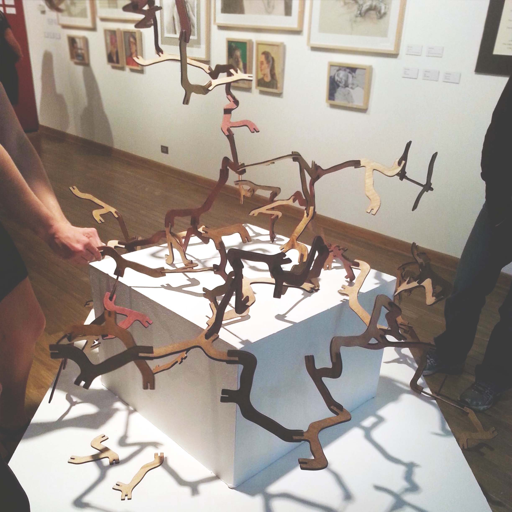

Turvangles
Let's connect
Turvangles - think "curved triangles" - are the sculpture you build yourself! Anyone can fit these interactive, connectable pieces together to create and recreate fine works of art. With just 16 unique Turvangle shapes, the possibilities are limitless!
Okay, technically there's a limit somewhere. Scroll down for some math fun to see how I calculated 83 septillion possible unique sculptures.

Did I say 83 septillion? Yep. Let's break it down:
- There are 16 unique Turvangle shapes no matter how you position them in space. Each shape has 3 connection points (let's call them CP for short).
- There are 6 ways to connect any shape to any CP (that's 3 CP of the connecting shape times 2 orientations)
- There are 18 ways to add the second shape to the first (3 CP of the original shape times 6 ways to connect the new shape)
- Adding a shape always adds 1 open CP to the sculpture (assuming each piece shares only one connection with any other piece)
- This means there are always N+2 CP for the entire sculpture (a sculpture with 3 shapes would have 5 CP)
- But we're not at three shapes yet! When the third shape is added, is has 4 possible CP to attach to from the current 2 shape sculpture
- It also has 24 total ways to connect to the 2 shape sculpture (4 CP times 6 ways per CP)
- But remember how there were 18 unique sculptures that could be created with just two shapes?
- That means with three shapes, there are 24 times 18 unique sculptures - that's 432!
- I'll spare you the rest of the math, but there are 83,619,443,946,597,434,523,648,000 (83 septillion) possible unique sculptures from 16 pieces.